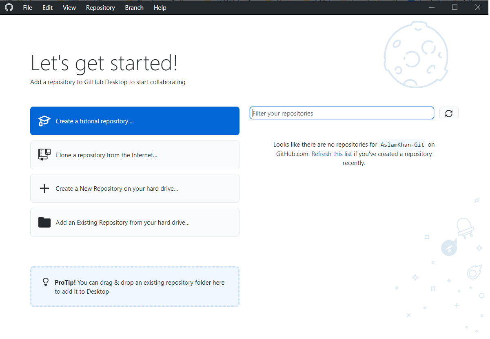

Guided path preview
Work the standard author route first.
Start in WMS, move into GitHub and markdown, then finish with QA and publishing only after the preview is stable.
New authors can move through three guided layers from request to publish. Returning authors can jump straight to the feature, tool, or QA answer they need.
Start in WMS, move into GitHub and markdown, then finish with QA and publishing only after the preview is stable.
Search and filter the card deck when you already know the task, instead of walking the full sequence again.
Use the custom Full Guide when you want the whole author map without falling back to the markdown navigation chrome.
Follow a short sequence from WMS request to GitHub setup to review and publish without making a new author read the entire documentation map first.
Open a searchable toolkit for formatting, media, quizzes, embeds, QA, and advanced patterns when the goal is finding one answer fast.
This path compresses the author journey into three layers: request the workshop, create the workshop in GitHub, then review and publish it. The progress dock and top controls stay visible so you always know where you are.
Guided mode keeps notes, common mistakes, and extra context visible.
Leave the sequence and jump directly to the reference toolkit whenever the problem is really about one feature, one tool, or one QA question.
Create the request in WMS with enough clarity that reviewers know the learner outcome, owner, and delivery shape before you start building.


Workshop Title:
Workshop Abstract:
Workshop Outline:
Workshop Prerequisites:
Stakeholder:
Workshop Council:
Workshop Owner Group:
Required tags:
- Level
- Role
- Focus Area
- ProductA council reviewer can tell in under a minute what the workshop teaches, who owns it, and whether anything about the later build or publish path needs special handling.
Set up the authoring environment, copy the sample structure, wire the manifest, and get a preview running early while the workshop is still cheap to fix.
git config --global core.longpaths true plus git config --global core.ignorecase false when you need them.manifest.json to real section or lab files instead of placeholders.

git config --global core.longpaths true
git config --global core.ignorecase false
{
"workshoptitle": "My Workshop Title",
"help": "my-team@oracle.com",
"tutorials": [
{
"title": "Start Here",
"filename": "./../../01-start-here/start-here.md"
},
{
"title": "Core Workflow",
"filename": "./../../02-core-workflow/core-workflow.md"
}
]
}You can open the preview from your fork, the manifest points to real labs, and the structure is stable enough that deeper content work will not require foundational rework.
Run preview and QA checks, complete Self QA in WMS, open a clean PR, and supply the final publishing details so the workshop can move to production.
?qa=true, and fix LintChecker findings before you ask anyone else to review the workshop.github.io workshop link, upload the requested evidence, and click Save.

PR title:
Publish My Workshop Name (WMS 12345)
Preview URL:
https://<github-username>.github.io/<repo-name>/<path>/workshops/<variant>/index.html?qa=true
Production URL:
https://oracle-livelabs.github.io/<repo-name>/<path>/workshops/<variant>/Reviewers can approve from one clean PR, the WMS record is consistent with the release, and the production workshop matches the preview you already checked.
Use this toolkit deck when you already know where you are stuck. Search, filter, open a card, copy the snippet, and return to authoring without walking the full guided path.
If the real problem is sequence rather than lookup, go back to the guided path and move through the three layers from top to bottom.
This mode starts at Start Here, keeps only the active sections from the original workshop guide, and turns them into section cards with real steps, copy-ready snippets, and screenshots instead of a contents-only navigation shell.
Pick a section on the left, use the card details on the right, and open the canonical lab only when you need the original markdown page beside this custom view.